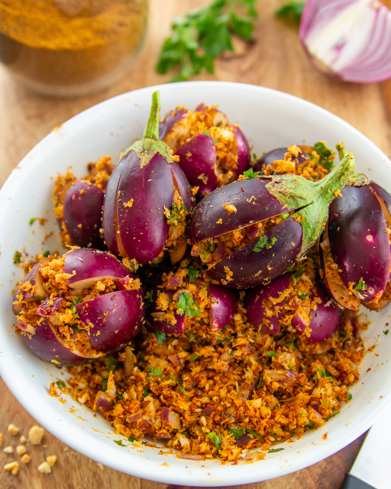
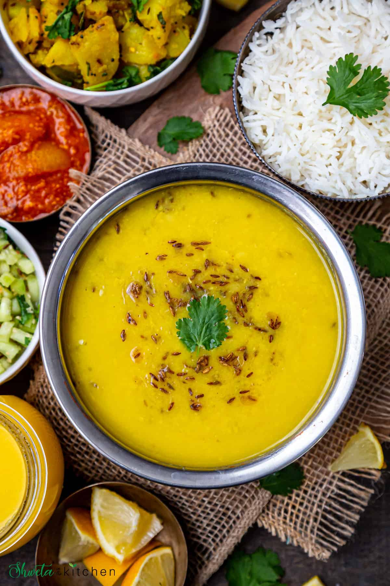
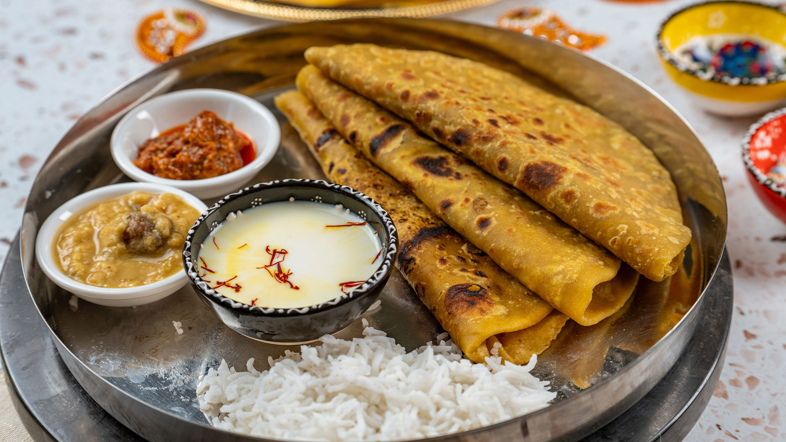
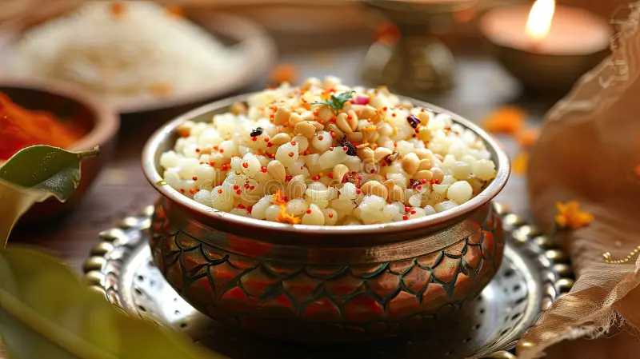

Traditional Dishes of Pune
Experience the authentic flavors of Pune's traditional cuisine! These timeless dishes reflect the city's rich culture and homegrown taste. Made with love and heritage, here are some must-try delicacies.
🌟 Dish of the Day
🔥 Traditional Highlights
🧄 Zunka Bhakri used to be the staple lunch for farmers and laborers!
🍽️ Traditional Specialties

Bharli Vangi
Stuffed brinjal cooked in spicy peanut gravy
📍 Sadashiv Peth

Varan Bhaat
Simple toor dal with rice and ghee
📍 Karve Road
Thalipeeth
Multi-grain spiced flatbread
📍 Kothrud

Puran Poli
Sweet flatbread stuffed with chana dal and jaggery
📍 Tilak Road

Sabudana Khichdi
Sago cooked with peanuts and mild spices
📍 Shivajinagar
Matki Usal
Spicy sprouted moth beans curry
📍 Deccan
📍 Traditional Food Spots
VIDEO
Sadashiv Peth
Home to authentic Maharashtrian traditional cuisine
📸 Traditional Food Gallery
🍛 Traditional Food Facts
🧄 Zunka Bhakri used to be the staple lunch for farmers and laborers
🍆 Bharli Vangi is served during many Maharashtrian wedding feasts
🥘 Masale Bhat is often paired with 'Papad' and 'Raita' for festive meals
🍚 Varan Bhaat is offered in many temples as prasad
🌾 Thalipeeth is made from 5-6 different types of flours
🫓 Puran Poli is traditionally made during Holi festival
💬 What Locals Say
"My grandmother's Bharli Vangi tastes just like the one in Sadashiv Peth!" – Meenal D.
"Varan Bhaat with ghee is my comfort food forever." – Ravi K.
"The best Thalipeeth is found in Kothrud's small eateries!" – Priya M.
⬅ Back to Main Page